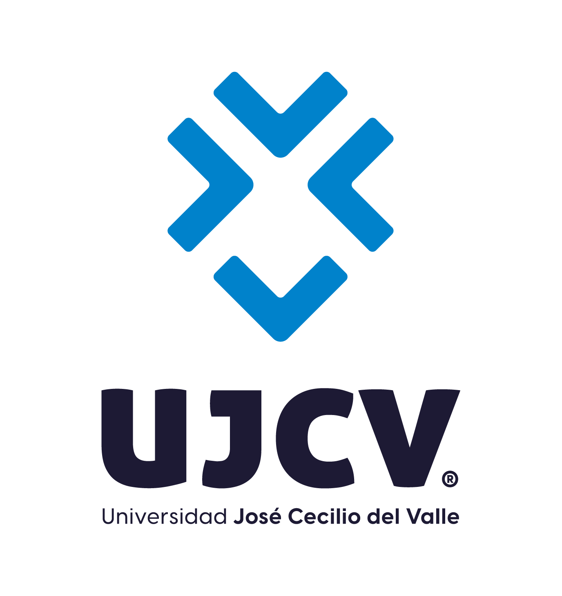

Janeth Bethsaida Cardosa Romero
Certificado de Aprobación
Descripción: Por haber cumplido satisfactoriamente con los requisitos académicos del Diplomado en Justicia Abierta.
Nota final obtenida: 90.11%
No. Registro: 1724 Tomo: I Folio: 155
Fecha: 09 de julio de 2025
Emitido por: Universidad José Cecilio del Valle
Firmantes:
Julio César Raudales – Rector
Martha Mélida Morales – Vice Rectora Académica
Certificante:
Sayra Vargas Gallegos – Secretaria General